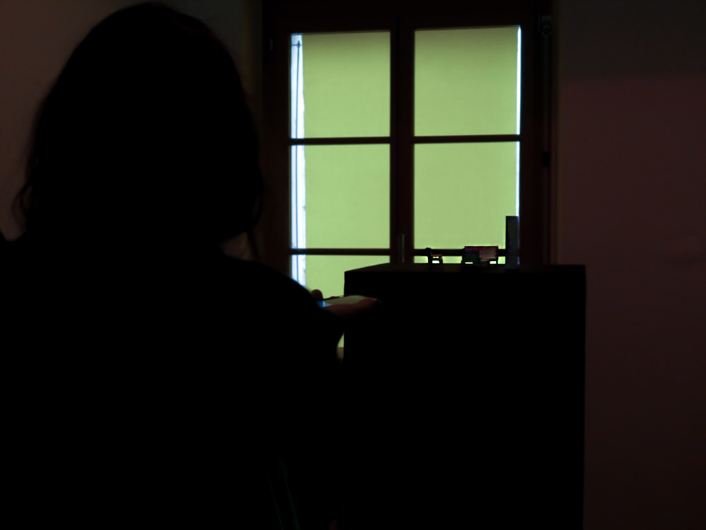
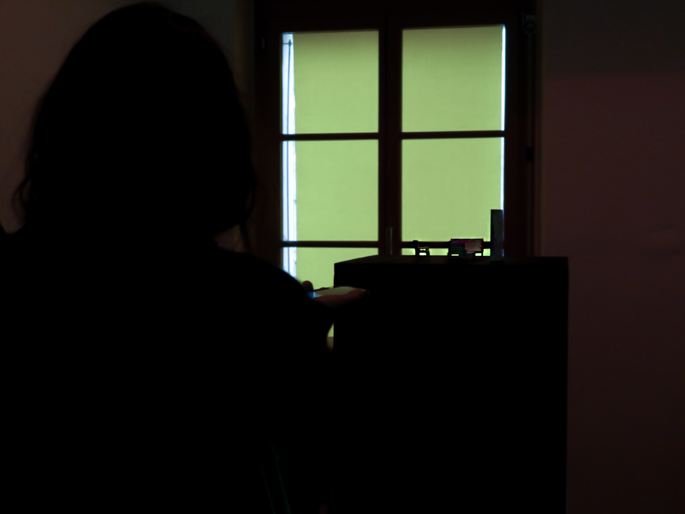
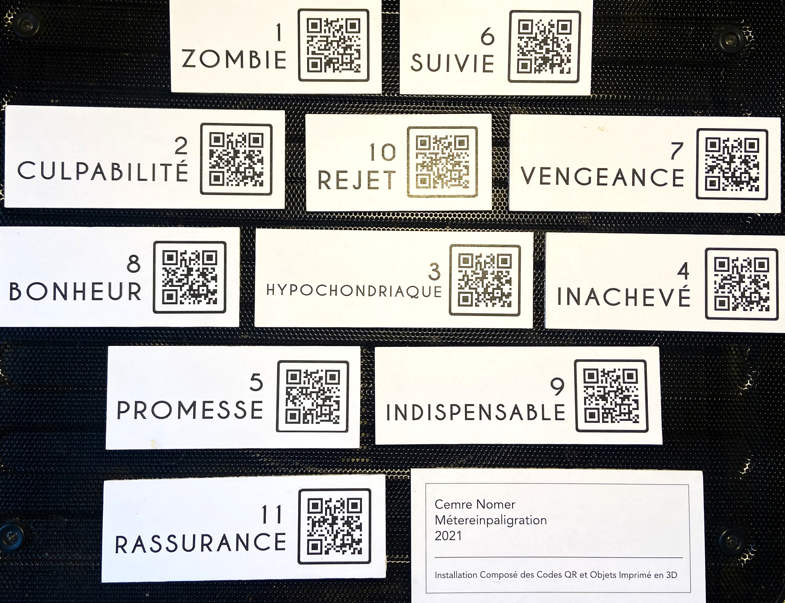
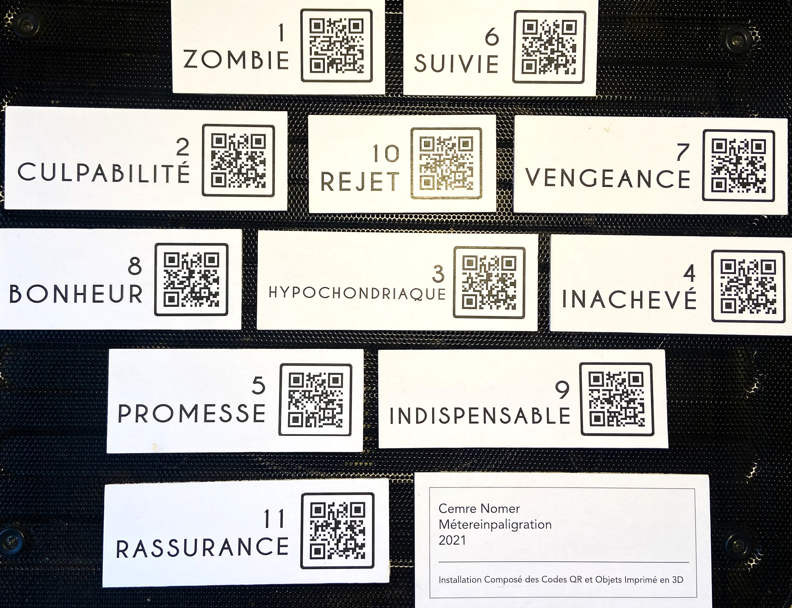

"Météreinpaligration" is a site-specific installation, its essence woven from twelve QR codes, each a gateway to a unique track resonating with "Gisele." This auditory journey intertwines with 3D printed objects. However, it is the artist's poignant encounter with a departed soul named "Gisele" that ignites the transformative juxtaposition.
Driven by an ardent desire to transcend mortality's confines, Gisele yearned for a return from the realm of the deceased. Her fervent longing found expression in twelve distinct narratives, encapsulated within the individual QR codes. Through these encoded tales, Gisele articulates her manifold motivations for seeking reincarnation, inviting viewers to immerse themselves in her deeply personal journey of resurfacing from the veils of oblivion.
Enveloping the narrative of "Gisele" are the 3D modeled objects using "Blender", fragments of her former living space in the world that currently envelops us. With delicate precision, the artist brings to life the essence of Gisele's earthly abode, creating a tangible bridge between the ethereal and the corporeal. Each object embodies Gisele's presence, resonating with her longing, memories, and aspirations.

 
